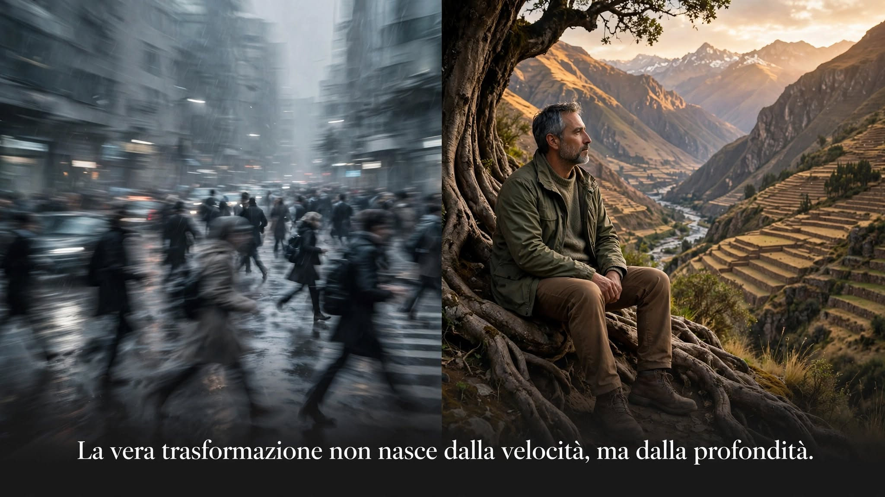

Coaching · Mente
La trasformazione non nasce dalla velocità, ma dalla profondità.
In un mondo che corre sempre, abbiamo scambiato il movimento per progresso. Ma la crescita vera non somiglia a una fuga: è un incontro più lento, più intenso e più genuino con ciò che siamo.
Viviamo nell'era del tutto-e-subito. Corsi accelerati, trasformazioni in sette giorni, successi in novanta. Ci misuriamo in virgole decimali: quanti passi al giorno, quante pagine all'ora, quanti progressi al minuto. E chi corre più in fretta viene ammirato come se la meta avesse fretta di arrivare.
Ma ho passato trent'anni a osservare le persone di persona, nei teatri, nelle aziende e nei percorsi di coaching — non sui social. E la cosa che mi colpisce di più è questa: chi si muove più lentamente è quasi sempre chi arriva più lontano.
1. La velocità è una fuga travestita da crescita
Il movimento ha un effetto collaterale poco raccontato: ci fa sentire vivi senza dirci dove stiamo andando. Correre è facile da riconoscere quando si scappa da qualcosa di concreto. È più difficile riconoscerlo quando si corre indisturbati in avanti, perché la fuga più elegante è quella che ha tutta l'apparenza del progresso.
Ho lavorato con persone brillanti, piene di programmi, di corsi e di obiettivi. Umanamente straordinarie. E tutte avevano in comune una stanchezza che non veniva dal troppo fare, ma dal troppo scappare. Scappare dalla scelta, dalla quiete, dal silenzio — dall'unica domanda capace di fermarle davvero: dove stai andando, e perché?
Il movimento ci fa sentire vivi. Ma non sempre ci fa arrivare da qualche parte.
2. La prigione invisibile
C'è una frase che sento ripetere ogni giorno: "non ho tempo". Ma il tempo non è la variabile che manca. La variabile che manca quasi sempre è un'altra: la chiarezza su cosa è davvero importante.
Quando manca la profondità, il tempo si riempie di rumore. E il rumore ha un vantaggio tremendo: non ci lascia pensare. Fintanto che corriamo, non ci sono domande scomode, non c'è spazio per ciò che non abbiamo ancora deciso. La velocità diventa la prigione più comoda che esista: nessun muro, ma nessuna porta verso l'interno.
3. La profondità richiede un coraggio che la velocità non conosce
Andare in profondità significa fermarsi. E fermarsi, nel mondo di oggi, è quasi un atto di disobbedienza. Richiede il coraggio di far rumore solo dentro di sé, di stare nella propria domanda senza cercare subito una risposta che la zittisca.
Nei miei percorsi non insegno a pensare "più positivo". Insegno qualcosa di più scomodo: a stare nella realtà come è, senza scappare. La trasformazione non è il premio che arriva dopo la fatica. È il risultato di aver smesso di scappare da un abbastanza profondo da permettere al cambiamento di radicarsi.
Ecco perché la profondità non è lenta. È solo che il suo tempo non è il nostro. Ha un'altra scala, un altro ritmo. La nostra fretta nasce dalla paura di non farcela. La profondità nasce dalla fiducia che il tempo ci basterà.
4. Le due domande che sbloccano tutto
Nel lavoro di coaching uso due domande che smontano quasi tutte le corse inutili. La prima riguarda la direzione: questo che sto facendo, mi porta davvero dove voglio arrivare, o mi porta solo lontano da dove non voglio stare?
La seconda riguarda il timore che ci spinge: se non avessi nulla da temere, cosa smetteresti di fare e cosa inizieresti?
Non sono domande da farsi una volta all'anno, davanti a un caffè. Vanno fatte ogni volta che si sente il bisogno di correre. La risposta non è quasi mai "vai più veloce". È quasi sempre "fermati da qualche parte e guarda davvero".
5. La trasformazione non è un traguardo
La trasformazione non arriva quando finalmente ce la facciamo. Arriva quando smettiamo di correre verso una versione di noi che non esiste ancora, e iniziamo ad abitare quella che esiste adesso — con la sua lentezza, le sue pause, i suoi silenzi e le sue domande incomplete.
Chi ha imparato a scendere in profondità non ha fretta. Sa che le montagne non si scalano correndo: si scalano un passo alla volta, in silenzio, ascoltando dove mettere il piede. E la vetta, di solito, non è dove pensavi. È dove hai smesso di pensare.
In questo momento
di incertezza economica, di cambiamenti rapidi, di decisioni da prendere senza rete — parlare con qualcuno che ha già accompagnato altre persone attraverso questo tipo di svolte può fare la differenza tra restare fermi e trovare la direzione.
Se ti riconosci in questo, offro una chiamata conoscitiva gratuita di 30 minuti, senza impegno — per capire insieme se e come posso esserti utile.
📩 Prenota una chiamata gratuita · 🔗 Referenze e certificazioni su LinkedIn